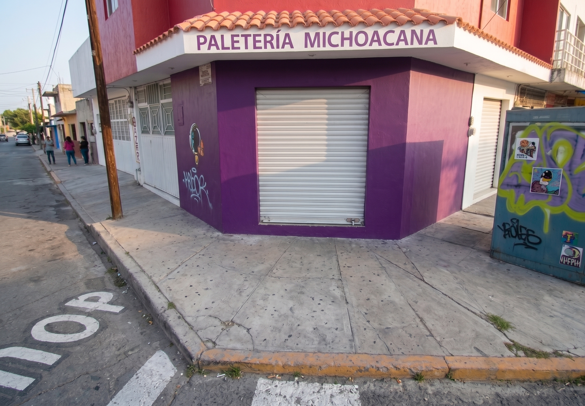
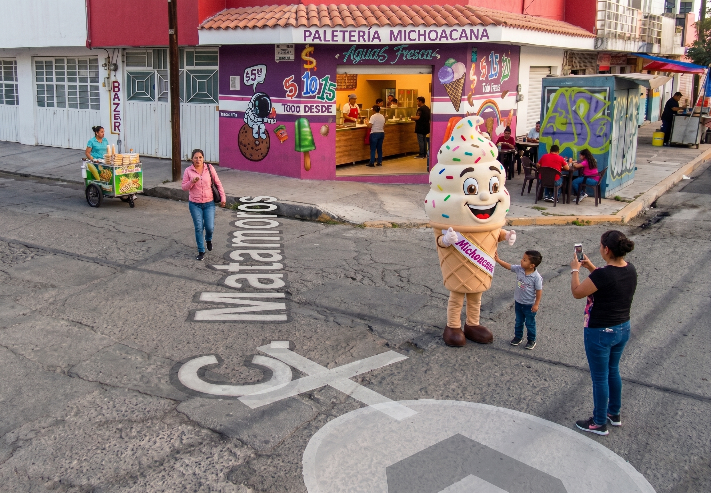
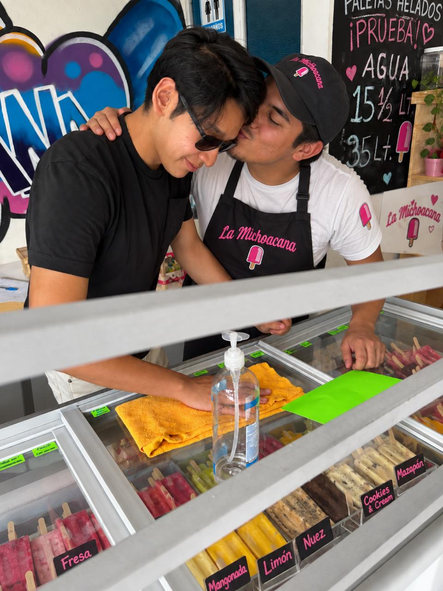
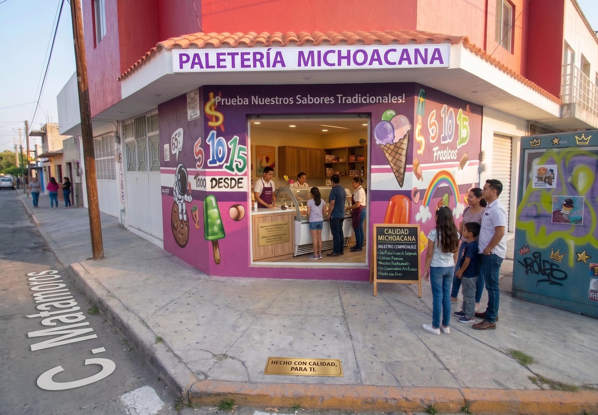

El comienzo
Nuestra historia comenzó con una idea sencilla: crear un espacio donde las personas pudieran disfrutar de los sabores que forman parte de la tradición mexicana. Como familia, siempre hemos creído en el valor del trabajo, la dedicación y el servicio a la comunidad. Durante mucho tiempo buscamos una oportunidad que nos permitiera emprender en un negocio con identidad, historia y una conexión genuina con las personas. Fue entonces cuando conocimos la posibilidad de adquirir una sucursal de La Michoacana. Desde el primer momento supimos que no se trataba únicamente de un negocio, sino de una oportunidad para formar parte de una tradición que ha acompañado a generaciones de familias mexicanas.


Una oportunidad especial
Cuando nos enteramos de que una sucursal estaba disponible, decidimos investigar más sobre el proyecto. Analizamos el mercado, estudiamos las necesidades de la zona y conversamos con clientes potenciales para comprender qué era lo que más valoraban en una paletería. Lo que descubrimos fue muy claro: las personas buscaban un lugar donde encontrar productos de calidad, sabores auténticos y una atención cercana. Querían una experiencia que les recordara momentos especiales de su infancia, reuniones familiares y tardes compartidas con amigos. Después de evaluar todos los aspectos del proyecto, entendimos que esta era la oportunidad que habíamos estado esperando.
La decisión de emprender
Adquirir una sucursal de La Michoacana representó un gran reto. Fue una decisión que implicó compromiso, planeación y una importante inversión de tiempo y recursos. Sin embargo, estábamos convencidos de que con esfuerzo y dedicación podríamos construir algo especial. Como familia, nos reunimos en varias ocasiones para definir nuestros objetivos y la visión que queríamos transmitir. No solo buscábamos vender paletas, helados y aguas frescas; queríamos crear un espacio que se convirtiera en parte de la vida cotidiana de nuestra comunidad. Con esa meta en mente, decidimos dar el paso y comenzar esta nueva etapa.

Los primeros desafíos
Los primeros meses fueron un periodo de aprendizaje constante. Tuvimos que conocer cada detalle del funcionamiento del negocio, desde la atención al cliente hasta la administración de inventarios y la organización de las operaciones diarias. Cada día representaba una nueva oportunidad para mejorar. Escuchamos atentamente las opiniones de nuestros clientes, identificamos áreas de oportunidad y trabajamos para ofrecer una experiencia cada vez más agradable. Hubo momentos de incertidumbre, como ocurre en todo emprendimiento, pero también hubo muchas satisfacciones. Ver a las familias regresar, recomendar nuestros productos y convertirnos en parte de sus momentos especiales nos motivó a seguir adelante.


Nuestro compromiso con la calidad
Desde el primer día entendimos que la confianza de nuestros clientes debía ganarse a través de la calidad. Por ello, nos comprometimos a mantener altos estándares en cada producto que ofrecemos. Nos esforzamos por conservar los sabores tradicionales que han hecho famosa a La Michoacana, cuidando cada detalle para garantizar frescura, sabor y una experiencia memorable. Creemos que una buena paleta o un buen helado no solo se mide por sus ingredientes, sino también por la dedicación con la que se prepara y se sirve. Esa filosofía continúa guiando nuestro trabajo todos los días.
